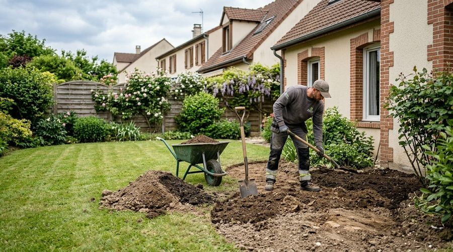
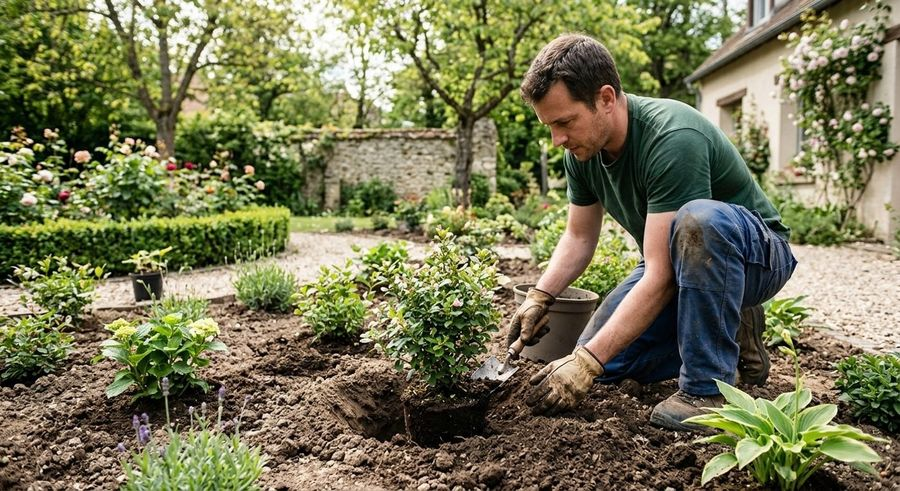
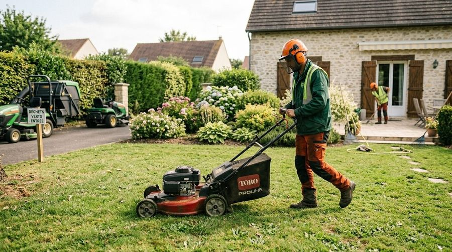

Terrassement et nivellement
On prépare le terrain avant tout aménagement : on creuse, on nivelle, on met le sol à niveau.
Un volet pour construire et planter, un volet pour entretenir. Choisissez celui qui vous concerne.


Une terrasse en bois pour manger, recevoir ou simplement profiter du jardin, posée au plus près de la maison.

Dalles ou pavés pour relier la maison au jardin, avec un éclairage discret pour les soirées.

Murets, marches et soutènements en pierre pour structurer un terrain et créer des niveaux.

On prépare le terrain avant tout aménagement : on creuse, on nivelle, on met le sol à niveau.

Choix et mise en place des plantes, création de massifs et de bordures qui tiennent dans le temps.
Des passages réguliers ou ponctuels, selon vos besoins.



Appelez-nous : on regarde ensemble ce qui est possible chez vous.